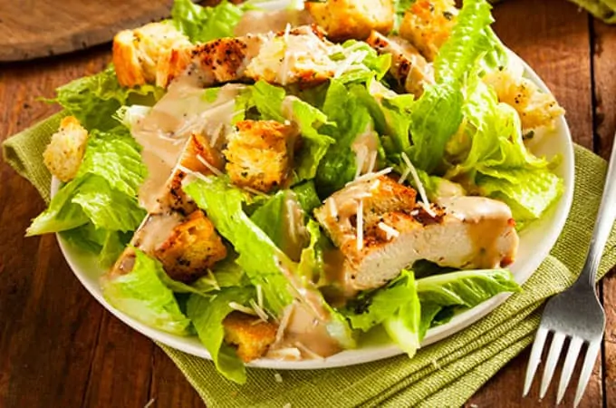

Ensalada Cesar

Descripcion
La Ensalada Cesar es uno de los entremeses más deliciosos que encontraremos sobre la mesa. Aunque no es una receta originaria de nuestra tierra, sin duda es una de las favoritas en hogares y restaurantes. Por supuesto, le hemos dado nuestro toque peruano, como siempre hacemos. ¡Vamos a cocinar!
La preparación de la Ensalada Cesar es bastante simple, sin embargo, la exquisitez del plato es producto de los ingredientes utilizados. La fusión de los vegetales frescos con pan, queso parmesano, tocino y el delicioso aderezo dan como resultado un sabor verdaderamente único.
Ingredientes
- 2 lechugas romanas medianas
- 2 tazas de pan tostado picado en cubos
- 200 gramos de tocino
- 40 gramos de queso parmesano
- 1/2 pechuga de pollo
- Sal
- 50 gramos de anchoas
- 1 limón
- 1 cucharada de mostaza de Dijon
- 1 diente de ajo
- Aceite de oliva
- 1 cucharada de salsa inglesa
- 2 huevos sancochados
Pasos
- Comienza por el aderezo. Para ello, toma el vaso de la licuadora y agrega en él los huevos, la salsa inglesa, el jugo del limón, las anchoas, el ajo y la mostaza.
- Enciende la licuadora a velocidad media y comienza a verter un chorrito de aceite de oliva. Agrega la cantidad que sea necesaria hasta que alcance la consistencia de una mayonesa. Reserva en el refrigerador.
- Adereza la pechuga de pollo con sal y pimienta y coloca sobre la plancha. Una vez que esté bien cocido procede a picarlo en cubos o en lonjas. Esto dependerá de tus gustos para la presentación.
- Lava muy bien la lechuga, y deja remojar en agua con vinagre y sal por unos minutos. Cuando esté listo, procede a retirarlo y a cortarlo finamente.
- Y listo, solo falta armar. En una ensaladera vierte la lechuga, luego los trozos de pollo, los cubos de pan y espolvorea con el queso parmesano.
- Finalmente, añade el aderezo, y mezcla muy bien.